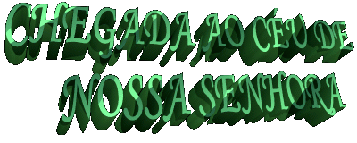
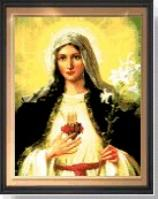
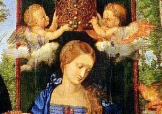
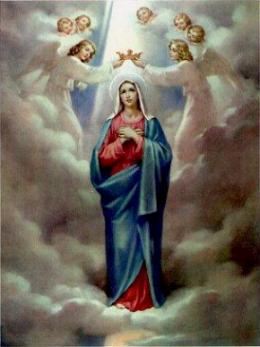

 Para
transmitir o que provavelmente ocorreu no Paraíso Divino, tenho que lhes pedir
a devida vênia, uma licença amiga e muito especial, porque esta descrição da
chegada de MARIA DE NAZARÉ ao Céu, é resultado de um incomparável esforço de
imaginação, fundamentado sobretudo em informações bíblicas e nas palavras dos
Santos e Anjos do SENHOR, muito embora mesmo assim, ela se situa dentro de
um contexto que sinceramente, ainda se nos afigura de extremamente modesto,
em virtude da grandiosidade e do esplendor, que com certeza,
deve ter revestido o acontecimento.
Para
transmitir o que provavelmente ocorreu no Paraíso Divino, tenho que lhes pedir
a devida vênia, uma licença amiga e muito especial, porque esta descrição da
chegada de MARIA DE NAZARÉ ao Céu, é resultado de um incomparável esforço de
imaginação, fundamentado sobretudo em informações bíblicas e nas palavras dos
Santos e Anjos do SENHOR, muito embora mesmo assim, ela se situa dentro de
um contexto que sinceramente, ainda se nos afigura de extremamente modesto,
em virtude da grandiosidade e do esplendor, que com certeza,
deve ter revestido o acontecimento.


É tradição cristã que aos 72 anos de idade, MARIA despediu-se da sua vida terrestre. No sentido teológico a morte é uma consequência do pecado. Ora, sendo MARIA totalmente Santa e isenta de qualquer mancha de pecado por menor que fosse evidentemente não devia estar sujeita a padecer a “morte corporal” como toda a humanidade, pois todas as gerações são atingidas pelo veneno do pecado, que NELA, nunca conseguiu atingir. Todavia, DEUS CRIADOR querendo que MARIA “fosse bem semelhante” a JESUS, convinha que morresse a MÃE como tinha morrido também o FILHO. Quis o SENHOR DEUS CRIADOR dar aos “justos, um exemplo da morte preciosa que lhes está reservada,” e por isso, determinou que a VIRGEM SANTÍSSIMA também morresse, mas de morte suave e feliz. Assim, na Sua pequena casa em Jerusalém foi “visitada” pelos Apóstolos, presentes naquele bendito dia, e foi transportada aos Céus, em Corpo e Alma, pelo Seu querido FILHO JESUS que veio buscá-la, acompanhado por um sonoro e alegre cortejo de Anjos. (Dogma de Fé). Segundo historiadores antigos e entre eles: André de Creta e João Damasceno confirmam a crença geral de que MARIA entrou no Paraíso de DEUS, conduzida pelo Seu FILHO JESUS e acompanhada pelos Anjos:
Uma música de indizível beleza formava uma atmosfera de arrebatamento e êxtase, que crescia com as vozes dos Anjos, Querubins, Serafins e toda família celeste, que entoavam maravilhosos acordes com harmonia e perfeição, expressando júbilo e contentamento, pela chegada ao Céu de MARIA DE NAZARÉ.
ELA habitualmente revestida de muita serenidade,
via a tranquilidade fugir de 
Caminhando ao lado de Seu FILHO JESUS, de um lado e de outro do trajeto, no meio de tantos olhares sorridentes, distinguia aqui e ali um rosto mais conhecido, uma fisionomia mais amada. É assim que no meio da multidão despontava o semblante de José, seu esposo virginal; Joaquim, seu pai; Ana, sua mãe; Sobé e Maria, as duas titias; Isabel, sua prima; Zacarias, João Batista, Nathan, Estêvão, Jacó e muitos outros.
Pétalas de lindas flores caíam de todos os lados, ornando-a com as cores do arco-íris. E o seu coração pulsava forte, estando com os sentidos concentrados e em suspense, na expectativa do Seu encontro tão sublime e tão ansiosamente almejado com DEUS PAI CRIADOR.
 De seus encantadores olhos reluziam um brilho
intenso que traduzia deslumbramento e felicidade, reflexos de seu reconhecido
agradecimento por tantas honrarias, distinções e por todas aquelas exaltações
de carinho e afeto.
De seus encantadores olhos reluziam um brilho
intenso que traduzia deslumbramento e felicidade, reflexos de seu reconhecido
agradecimento por tantas honrarias, distinções e por todas aquelas exaltações
de carinho e afeto.
Por certo, aquelas manifestações de inconfundível apreço lhe trouxeram à mente os longos anos em que viveu na Terra, anelando pela chegada deste dia.
Lembrava-se de quantas vezes, sozinha em seu quarto, olhava para o Céu e perscrutava a imensidão do firmamento celeste, apreciando e admirando a invulgar beleza, toda ela, manifestação viva do Amor de DEUS. Não que quisesse sondar o espaço infinito e encontrar nele a solução de muitos segredos, ou uma luz que lhe revelasse o por que dos fatos, uma explicação para a vida e para o seu Mistério em particular. Ela não se preocupava com isto e nem sentia uma premente necessidade de conhecer e desvendar as verdades não conhecidas. O que MARIA realmente queria e procurava, eram outras maneiras, era descobrir um melhor caminho, inovar outro meio para cultivar ainda mais a pureza de seus desejos, uma criação sublime e carinhosa, que conduzisse com maior vigor os seus ilibados sentimentos a continuar evoluindo sempre, crescendo em ternura e em intensidade afetuosa, para melhor amar e agradar a DEUS.
Envolvida por tantas lembranças, a cada passo recordava também que meditando sobre os Mistérios de DEUS e de JESUS, seu querido e amado FILHO, involuntariamente ia compreendendo o seu próprio Mistério e a sua Vida no plano Divino.
E por tudo o que sentia e via, caminhava
emocionada para o CRIADOR, meta 
A esta indefinível alegria, somava um ardor a mais em seu coração, indicando que a sua expectativa cresceu de dimensão, assim como aumentou o seu regozijo, porque na direção que caminhava ao lado do Seu FILHO já podia delinear o trono do ETERNO PAI. A multidão celeste acompanhando sensibilizados todos aqueles lances se comovia e se agitava no meio de efusivos aplausos, de saudações espontâneas e cheias de afeto, e dos melodiosos acordes de uma linda canção.

MARIA DE NAZARÉ, num gesto de profundo respeito, prostrou-se com o rosto no chão e podemos ouvir em nosso coração as palavras que ELA pronunciou, expressando todo o seu incontido e dedicado amor:
"Meu SENHOR e meu DEUS, aqui estou para servi-LO por toda eternidade".
DEUS PAI encantado com SUA OBRA PRIMA levantou-se do trono e afetuosamente fez com que a DIVINA MÃE se erguesse e se assentasse à direita de JESUS.
A música aumentou, o coro tornou-se mais vibrante e belo, as saudações se multiplicaram com maior intensidade, era o prenúncio de um clímax esperado e sonhado por todos. Os Arcanjos Gabriel, Miguel e Rafael, sorridentes, prevenidos e preparados para aquele evento tão especial, trouxeram uma maravilhosa coroa de ouro com belíssimas pedras preciosas incrustadas e depositou-a nas mãos de DEUS, que segurando numa parte ofereceu o outro lado à JESUS e ambos coroaram MARIA SANTÍSSIMA, "Rainha do Céu e da Terra", ao mesmo tempo em que o ESPÍRITO SANTO, sob a forma de uma pequena pomba branca, deixava cair do alto em imensa profusão, uma esplendorosa luz que transluzia, e que fazia transparecer toda a sublimidade, toda a beleza e a infinita grandeza da Glória de DEUS.

Nosso E-mail: